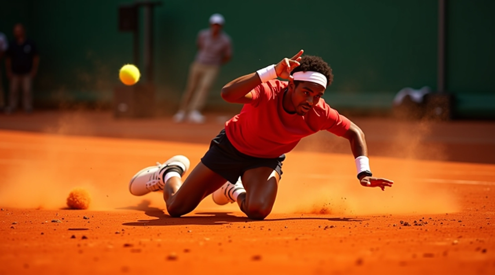
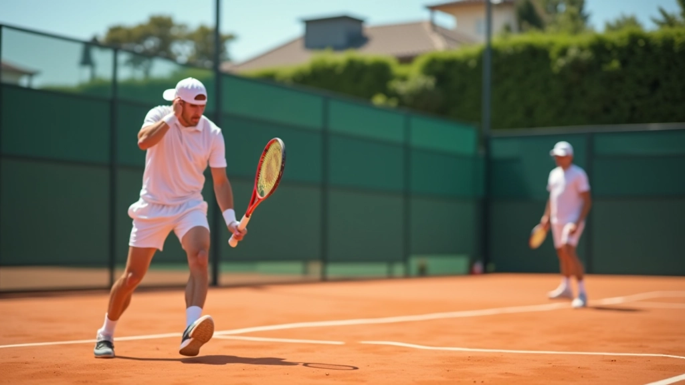

تقنية الانزلاق على الملاعب الترابية في التنس
تعلم كيفية الانزلاق بأمان وفعالية على ملاعب الطين
اختيار الحذاء المناسب
الحذاء هو أساس أي انزلاق آمن وفعال على الملاعب الترابية. يجب أن يوفر الحذاء الدعم الكافي للكاحل والثبات على السطح الناعم. الفرق بين حذاء الطين والأسفلت كبير جداً — التصميم والمواد المستخدمة تؤثر مباشرة على قدرتك على التحكم بحركتك.


خطوات الانزلاق الصحيحة
تنفيذ الانزلاق بشكل صحيح يتطلب فهم العديد من المراحل. من لحظة الاقتراب من الكرة إلى لحظة الانزلاق نفسه، كل خطوة مهمة. نتعلم الأخطاء الشائعة التي يرتكبها اللاعبون الجدد والطرق الفعالة لتحسين الأداء.
تمارين التوازن والثبات
القوة والتوازن هما أساس الانزلاق الآمن. برنامج تدريبي منتظم يحسن من قدرتك على السيطرة على جسدك أثناء الانزلاق. تمارين عملية يمكنك تطبيقها في كل جلسة تدريب، مصممة خصيصاً للاعبي التنس.

المهارات الأساسية
كل ما تحتاج معرفته لإتقان الانزلاق
تقنية القدم
تعلم كيفية وضع قدميك بشكل صحيح قبل الانزلاق وأثناءه لتحقيق أقصى استقرار
حركة الجسم
فهم كيفية تحريك الجسم بانسيابية خلال الانزلاق دون الإضرار بالمفاصل
تقوية العضلات
تمارين موجهة لتقوية العضلات اللازمة للانزلاق الآمن والفعال
فوائد الانزلاق الصحيح
لماذا يجب أن تتعلم هذه التقنية المهمة
الأمان والحماية
تقليل خطر الإصابات من خلال تقنيات صحيحة مثبتة وفعالة
الأداء العالي
تحسين سرعة الحركة والرشاقة على ملاعب الطين بشكل ملحوظ
الثقة والتطور
بناء ثقة اللاعب بنفسه وتطور مستمر في اللعبة والمهارات
تطور الموارد التعليمية
بدأنا بنشر المقالات الأولى حول تقنيات التنس الأساسية
إضافة أدلة مفصلة حول الانزلاق على الملاعب الترابية
توسيع المحتوى ليشمل تمارين التوازن والقوة
إضافة محتوى شامل عن اختيار الأحذية المناسبة
المقالات المميزة
عرض الكل
اختيار الحذاء المناسب للملاعب الترابية
الحذاء المناسب هو أساس الانزلاق الآمن. نتعرف على المواصفات التي تبحث عنها والفرق بين أحذية الطين والأسفلت.
اقرأ المزيد
خطوات الانزلاق الصحيحة: من البداية للاحتراف
شرح مفصل لكيفية تنفيذ الانزلاق بشكل آمن وفعال. تعلم الخطوات الأساسية والأخطاء الشائعة التي يجب تجنبها.
اقرأ المزيد
تمارين التوازن والثبات على الطين
برنامج تدريبي يركز على تحسين التوازن والثبات. تمارين عملية يمكنك تطبيقها في كل جلسة تدريب.
اقرأ المزيدقبل وبعد: التحسن المستمر
قبل التدريب
- توازن غير مستقر على السطح الناعم
- حركات غير منسقة ومؤلمة للمفاصل
- خوف من الانزلاق والإصابة
- أداء محدود في المباريات
بعد التدريب
- توازن ممتاز وتحكم كامل
- حركات سلسة وآمنة على الطين
- ثقة عالية في الأداء
- تحسن ملحوظ في النتائج
الأسئلة الشائعة
هل الانزلاق آمن للاعبين الجدد؟
نعم، تماماً. مع التدريب الصحيح والتقنية الموضحة في مقالاتنا، يمكن للاعبين من جميع المستويات تعلم الانزلاق بأمان. البداية تكون بخطوات بطيئة وتدريجية.
كم من الوقت يستغرق لإتقان الانزلاق؟
يختلف هذا من شخص لآخر، لكن معظم اللاعبين يلاحظون تحسناً ملحوظاً خلال 6-8 أسابيع من التدريب المنتظم. الاستمرار والممارسة هي المفتاح.
ما أفضل عمر لتعلم هذه التقنية؟
يمكن للاعبين من سن 10 سنوات فما فوق تعلم الانزلاق بأمان. الأطفال الأصغر سناً يحتاجون إلى تقييم فردي وتدريب موجه من مدرب متخصص.
هل أحتاج لأحذية متخصصة؟
نعم، أحذية الملاعب الترابية مهمة جداً. تم تصميمها خصيصاً لتوفير الثبات والحماية على السطح الناعم. استثمار في الحذاء الصحيح يقلل من خطر الإصابات.

ابدأ رحلتك نحو الانزلاق الاحترافي
استكشف مقالاتنا الشاملة وتعلم كل ما تحتاج معرفته عن تقنية الانزلاق على الملاعب الترابية. من اختيار الحذاء الصحيح إلى تمارين التوازن، نحن هنا لمساعدتك في كل خطوة.
نحن نستخدم ملفات تعريف الارتباط لتحسين تجربتك. يمكنك قبول أو رفض هذه الملفات.